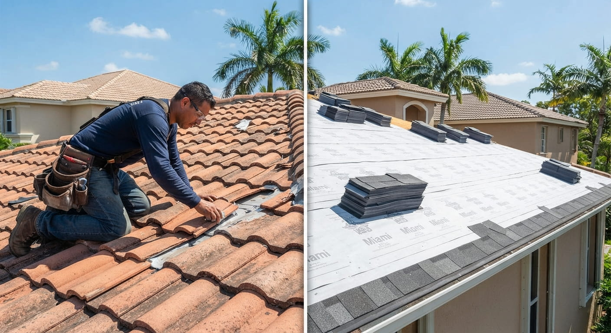

Roof Repair vs. Roof Replacement in Miami: Which Does Your Home Need?
When a Miami roof starts leaking or shows visible damage, homeowners often feel pushed toward one of two answers: repair it immediately or replace everything. In reality, the right decision sits between those extremes and depends on the condition of the complete roofing system.
A localized defect on a relatively healthy roof can often be treated differently from an aging roof with recurring leaks, widespread deterioration or extensive storm damage. The best way to tell the difference is to understand the evidence behind the recommendation.
When a repair may be the sensible choice
Repair is often appropriate when the problem is clearly localized and the surrounding roof remains in good condition. Examples can include a limited flashing failure, a small damaged section, or a specific storm-related defect that does not indicate broader deterioration.
The important question is not simply whether someone can physically patch the problem. Ask whether the repair addresses the cause and whether the rest of the roofing system is expected to continue performing normally.
Our Miami roof repair guide covers common repair situations.
When replacement starts to make more sense
Replacement becomes more compelling when problems appear across multiple areas, repairs have become frequent, the roof is significantly deteriorated, or storm damage has affected a substantial portion of the system.
An aging roof with repeated repairs deserves a different conversation from a newer roof with one isolated defect. Replacing an entire roof is a major project, so the recommendation should be supported by clear observations rather than a generic statement that the roof is “old.”
Why an inspection should come first
The inspection is where repair and replacement decisions become more objective. A professional can evaluate visible materials, flashing, drainage, signs of water intrusion and other components, then explain whether the problem appears isolated or widespread.
Read our Miami roof inspection guide before requesting estimates. A useful inspection should give you information that can be compared across contractors.
Miami weather changes the context
Heat, ultraviolet exposure, heavy rain, humidity and tropical storms all affect roofing performance. A roof that has survived years of weather may have a different risk profile from a recently installed roof, even if both appear acceptable from the ground.
After a hurricane or severe storm, the decision may also involve damage that is not immediately visible. See our guides to hurricane roof damage and storm damage roof repair.
Roof age is evidence, not a verdict
Age matters because roofing materials and components deteriorate over time, but age alone should not decide the project. Maintenance history, previous repairs, installation quality and storm exposure can change the condition of two roofs of the same age.
Our Miami roof lifespan guide explains the factors that influence roof performance, while our new-roof warning-sign guide focuses on condition.
How cost should influence the decision
It is reasonable to compare the immediate cost of repair with the larger cost of replacement, but homeowners should also consider what each option accomplishes. A cheap repair may not be a good value if it only postpones a broader failure. Conversely, replacement may be unnecessary if a localized repair can restore a healthy roof.
For replacement planning, see our Miami roof replacement cost guide. Ask contractors to separate immediate work from optional improvements and explain any assumptions about concealed conditions.
What about insurance?
If storm damage may be involved, document the condition and contact your insurer according to your policy. Insurance coverage is determined by the policy and insurer, not by the roofing contractor. A contractor can document physical damage and recommend work, while the insurer evaluates coverage.
Our roof insurance claims guide explains the documentation process and links to Florida consumer guidance.
Miami-Dade requirements can affect replacement
Permanent roofing work may involve permits, inspections and product requirements. Before approving a replacement, ask who is responsible for permits and which roofing system is being proposed.
Check current Miami-Dade roofing permit information and the Miami-Dade requirements guide.
Questions to ask a roofing contractor
A strong conversation should cover the cause of the problem, the extent of damage, the condition of the rest of the roof, the reason for the recommended scope, the materials being proposed and what happens if concealed damage is discovered.
Ask for a written estimate and compare scope rather than just price. If one contractor recommends replacement while another recommends repair, ask both to identify the evidence behind their conclusions.
Frequently asked questions
Is repair always cheaper than replacement?
The initial project cost is usually different, but repeated repairs can add up. Compare the expected result and remaining roof condition, not just today's invoice.
Can a roof leak be repaired if the roof is old?
Sometimes. The roof's overall condition determines whether a localized repair remains practical.
Should I get several estimates?
For a significant project, comparing written scopes can help you understand whether contractors are recommending similar work. An unusually low or high proposal deserves questions about what is included.
The practical decision
Repair when the problem is genuinely localized and the rest of the system remains sound. Consider replacement when deterioration, recurring failures or widespread damage make continued patching a poor long-term strategy. In either case, the decision should follow an inspection and a clear explanation of the roof's condition.
Continue through the Miami roofing resource center or request roofing help when you are ready to discuss the next step.
Sources and further reading
- Florida Hurricane Retrofit Guide — Roofs
- Miami-Dade County — Roofing Permits
- Florida Department of Financial Services — Homeowners Insurance
Related Miami roofing guides
Roof inspection · Roof repair · Roof replacement · More roofing advice